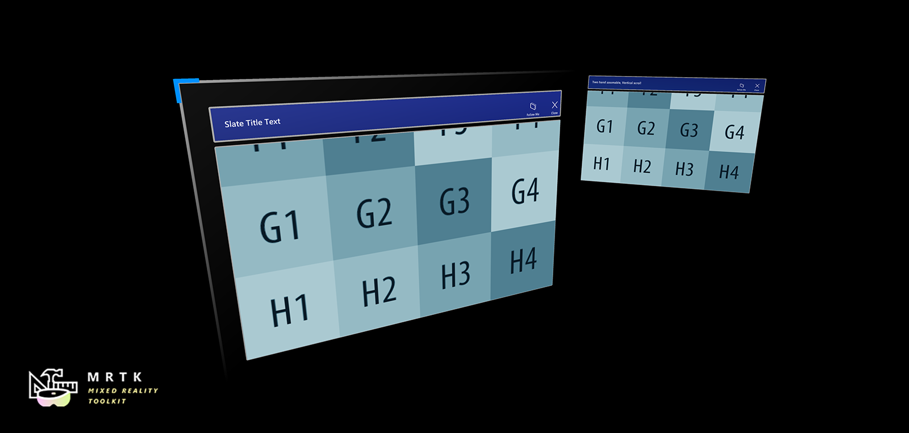

Slate (スレート)

スレート プレハブは、2D コンテンツを表示するための薄いウィンドウ スタイルのコントロールを提供しています (例えば、プレーンテキストやメディアを含む記事)。これは、掴める (grabbable) タイトル バーだけでなく、Follow Me と Close 機能を提供しています。コンテンツ ウィンドウは、多関節ハンドの入力を介してスクロールすることができます。
スレート コントロールの使い方
スレート コントロールは、次の要素で構成されています:
- TitleBar: スレートの上にあるタイトル バー全体。
- Title: タイトル バーの左側のタイトル領域。
- Buttons: タイトル バーの右側のボタン領域。
- BackPlate: スレートの裏側。
- ContentQuad: コンテンツはマテリアルとして割り当てられます。この例では、サンプル マテリアル 'PanContent' を使用しています。

Bounding Box (バウンディング ボックス)
スレート コントロールには、スケーリングと回転用のバウンディング ボックス スクリプトが含まれています。バウンディング ボックスの詳細については、バウンディング ボックス ページを参照してください。


ボタン
標準スレートには、デフォルトでタイトル バーの右上に 2 つのボタンがあります。
- Follow Me: スレート オブジェクトがユーザーを追いかけるようにするための orbital solver コンポーネントをトグルする。
- Close: スレート オブジェクトを無効にする。

スクリプト
一般的に、NearInteractionTouchable.cs スクリプトは IMixedRealityTouchHandler からのタッチ イベントを受け取りたいすべてのオブジェクトにアタッチする必要があります。

HandInteractionPan.csこのスクリプトは、多関節ハンドの入力を処理することにより、スレートの ContentQuad 上のコンテンツに触れたり移動したりできます。HandInteractionPanZoom.cs: このスクリプトは、パン (Pan、水平または垂直方向に移動させる) 操作に加えて、両手でのズームをサポートしています。